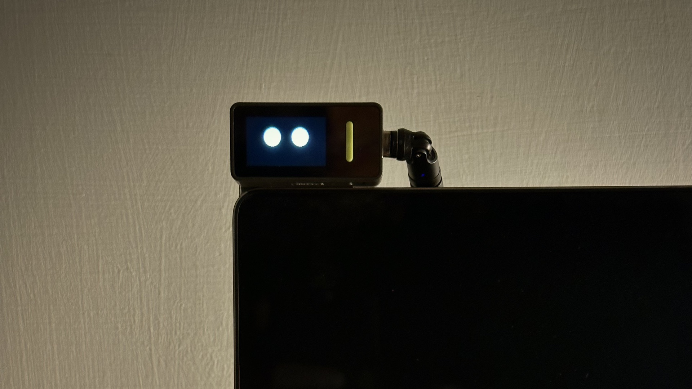
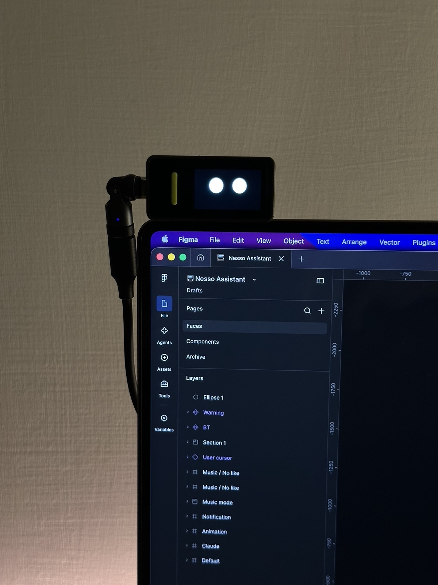
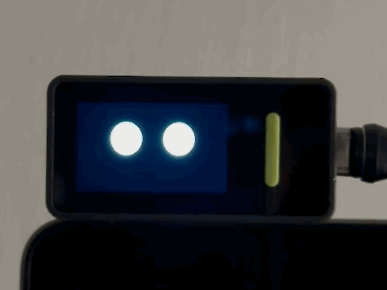
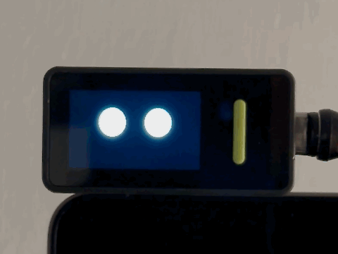
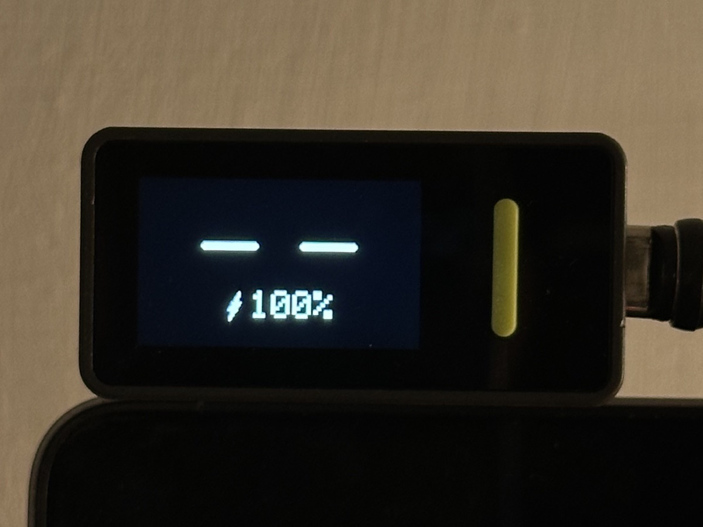
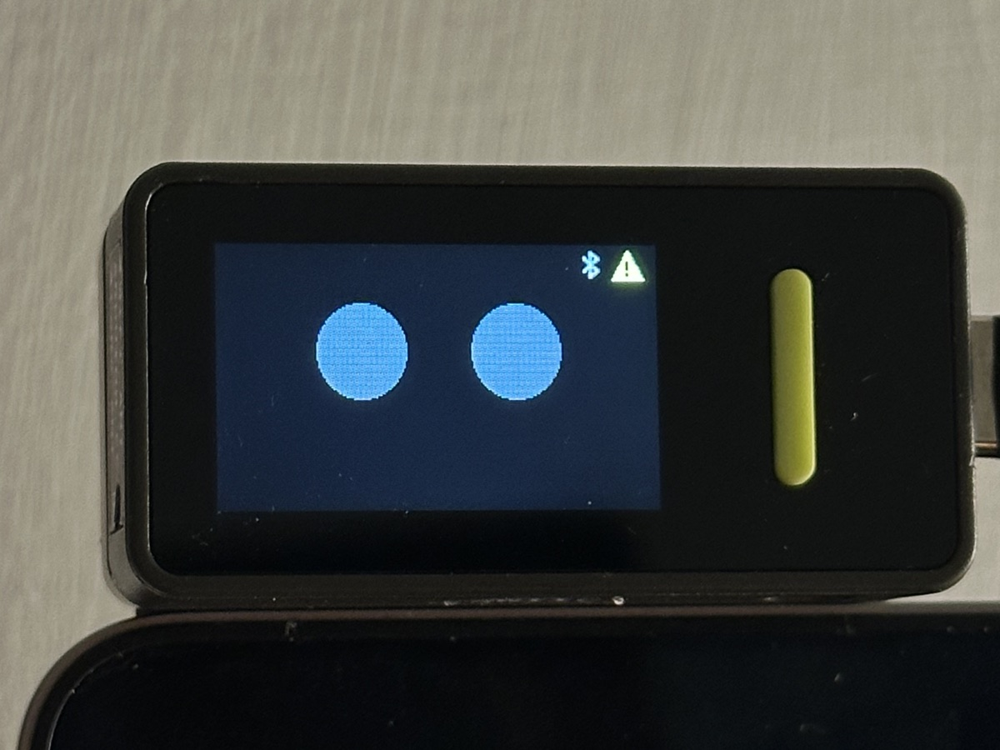
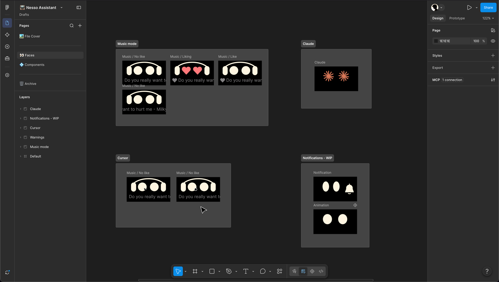

Built on the Arduino Nesso N1
work in progress
I built this desk assistant to stay productive, and above all to keep distractions out of the dead time, which has multiplied with the advent of AI.
It runs on the Arduino Nesso N1, a pocket-sized board with a 240×135 touch display, and sits on my computer. It tells me when I need to jump into a meeting (and whether my mic is on) and when Claude needs my attention. It also controls my music, which is always on when I work from home.
It hangs on the top-left corner of the screen, held by a small magnet behind it, so it comes off and goes back in a second. Flip it and the face turns with it: the Nesso senses its own orientation and corrects the display on the fly, with the cable on either side.
I wanted to experiment with a new, more “human” way of conveying states: not text, icons and badges, but a face. An expression reads at a glance, from across the desk, which also balanced out working with a very small screen.
So the face stays simple: two filled circles for eyes, with no pupils, and no mouth at rest. It blinks at a random rhythm and now and then glances to one side. Tilt the Nesso and the eyes follow; shake it and it gets nauseous; low on battery, it looks tired.

two circles, no pupils, no mouth
at rest
shaken
battery, on a key pressThe Nesso can't see my computer, so the computer tells it what's going on, every two seconds:
- Inactivity. After a minute without keyboard or trackpad, the face gets sleepy; after five, it falls asleep and snores – so the sound brings my attention back.
- Claude Code. While it works, the eyes turn terracotta and become a starburst, a nod to Claude's logo. When it's done, a ding and a smile. When it needs my answer, the face trembles and chimes.
- Meetings. Based on my calendar: the mouth talks and the eyes hold still.
- Microphone. It catches the calls the calendar doesn't know about, like quick calls from our internal messaging apps.
- Mute. The computer tells the Nesso whether I'm muted, and a key on its side mutes me.
- Music. Headphones, a gentle bob, the song title scrolling along the bottom and a heart on the songs I've liked. Swipe to skip, double-tap to like.
And when I push the cursor past the top of the screen, it lands on the Nesso, like on a tiny second monitor.
Failures get a signal; normality doesn't. A working Bluetooth connection isn't drawn at all: only a small rune appears when it drops.
Every alert must end. When Claude waits for an answer, the face chimes three times, then stops but keeps trembling: the question is still there. A tap on the Nesso means “got it”; if I've walked away for 90 seconds, it calls once more. An alarm you can't silence is one you learn to ignore.
No dozing at the wrong time. While Claude works or I'm on a call, I'm not typing for good reasons, so the idle count freezes. Otherwise the face would fall asleep right as Claude delivers the good news.
When in doubt, back to normal. Every signal can say “I don't know”, and every signal expires. A dead script, a pulled cable or a calendar that doesn't answer brings back the neutral face, never one stuck asleep or in a meeting.

only failures get a signalOne rule from the start: nothing on the computer gets more access than it needs. The Nesso learns how long I've been idle, never what I type; how many meetings are on, never what they're about; whether my mic is in use, never what it hears.
Two channels connect it to the computer, and very little crosses either of them. Even if something went wrong on one side, the worst it could do is put the face to sleep or skip a song.
Holding to that rule cost a couple of features along the way, a trade I'd make again.
- The goal was to build trust: a face I glance at a hundred times a day is only useful if I can believe it, even when something breaks.
- A tiny screen forces a hierarchy of signals: what gets color, what gets shape, what gets sound and what gets nothing at all.
- For things that last, like a meeting or a running task, an ambient display works better than a notification: I can check it without being interrupted.
AI agents keep proving more capable, and they built a lot of this with me. Still, every face landed in Figma: that's where I could take care of the details.

every face, drawn in Figma firstThe project is still evolving. Every day I use it becomes a test, and a way to find the next feature it needs.